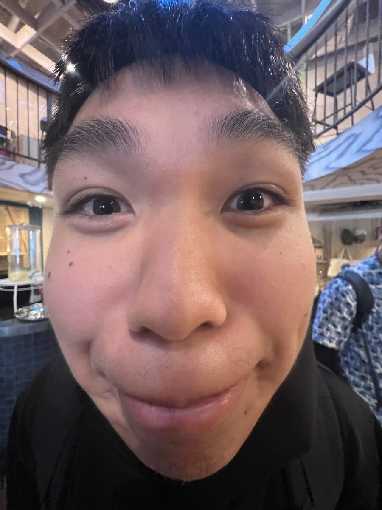
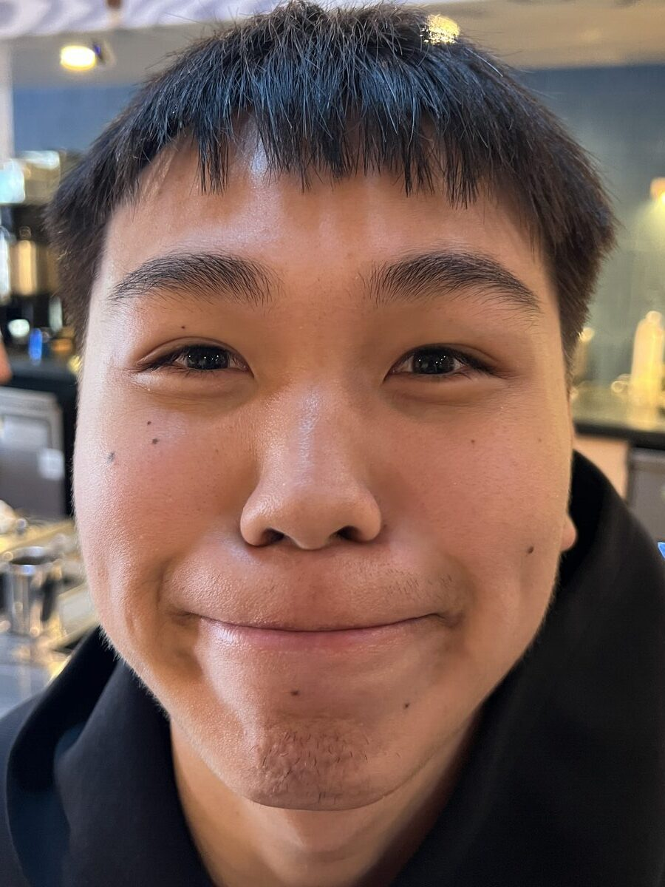
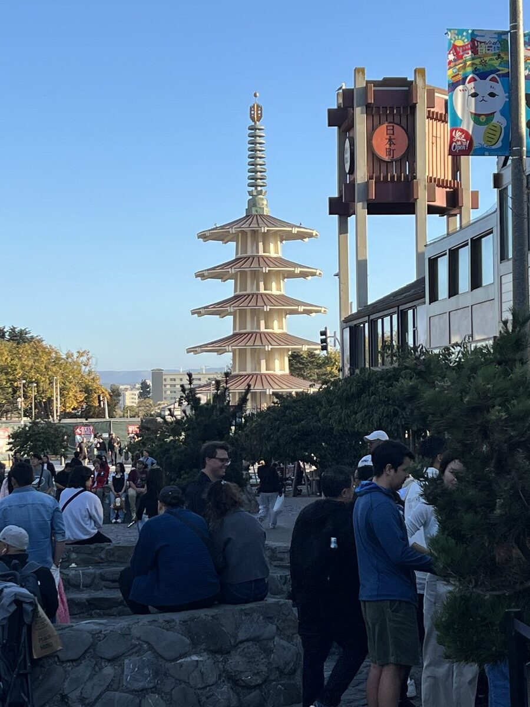
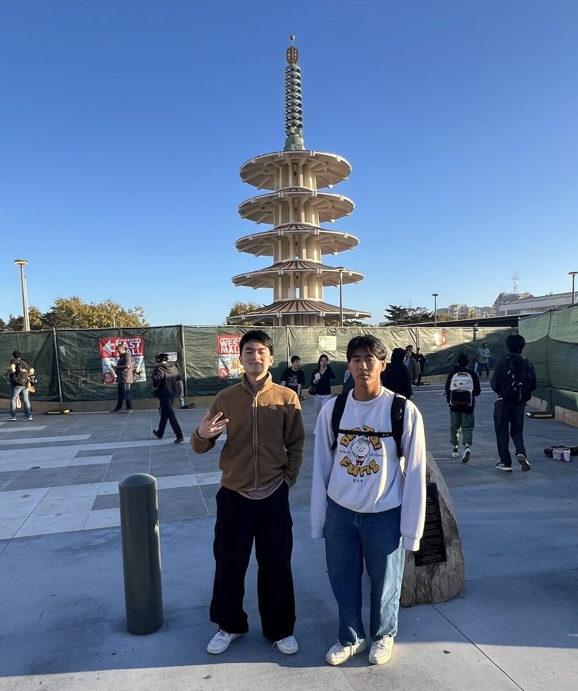
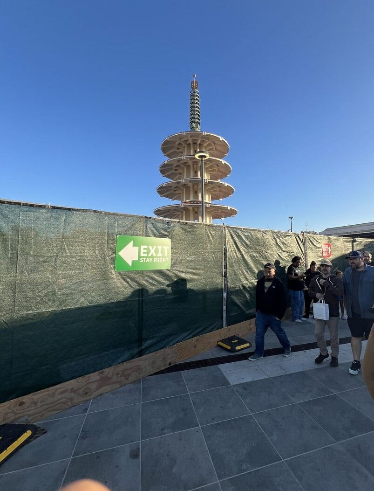
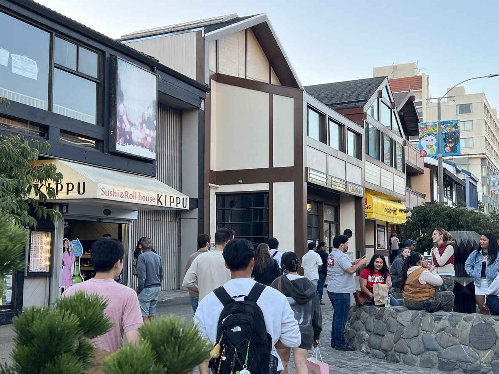
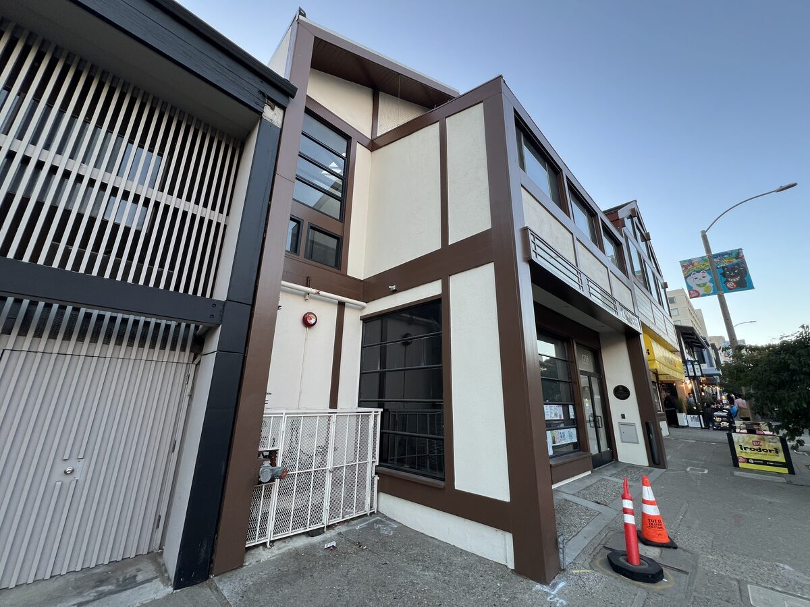
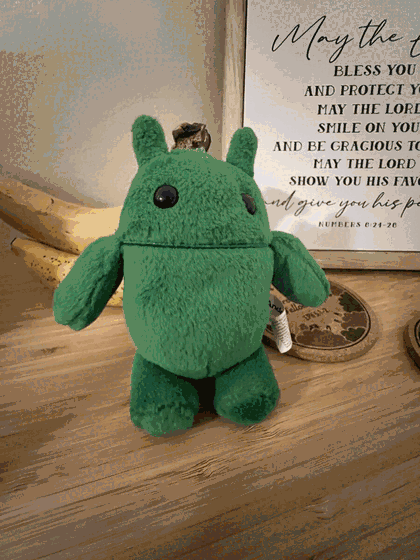

CS 180 · project 00
Becoming friends with your camera
Science and Context
Part 1: Selfie: The Wrong Way vs. The Right Way


During a 0.5 closeup selfie, the center of projection is very close to your face. Your nose is much closer (proportionally) to the center of projection with respect to your ears. This makes your nose disproportionally larger while the ears are very small. It looks like the face is bulging out. However, once you go farther away, the distance from nose / ear to center becomes roughly the same. The face looks flatter and more like how our eyes actually perceive faces (mimicking our center of projection).
Part 2: Architectural Perspective Compression



With similar reasoning, we can see that from close up, the dist from the near corner to the far corner of the restaurant is large relative to the distance from the near corner to the center of projection. From far away, the distance from the near corner to far corner becomes very small relatively. Thus, the two corner pixels hit a similar place on the iPhone camera sensor. This compresses the building in the image, and the building seems to compress toward the center point. We learn that our perspective depends on where we stand relative to the building.


Part 3: The Dolly Zoom
